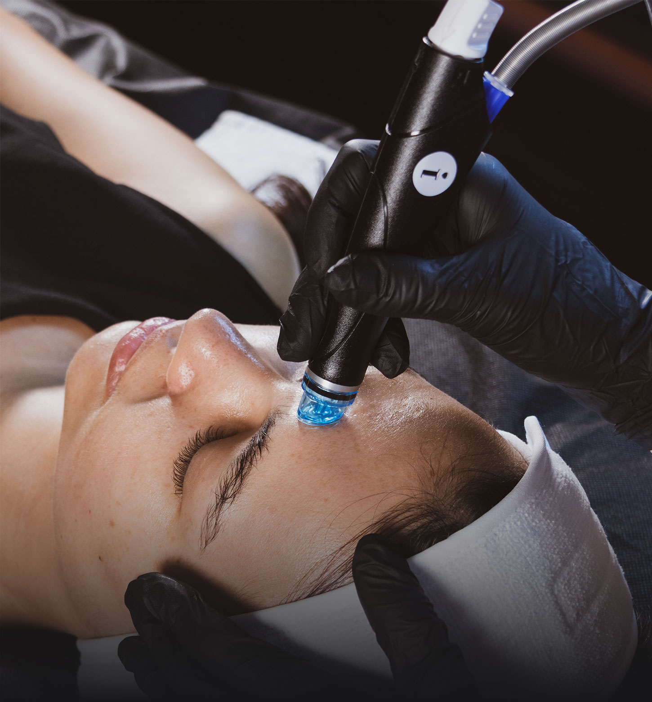
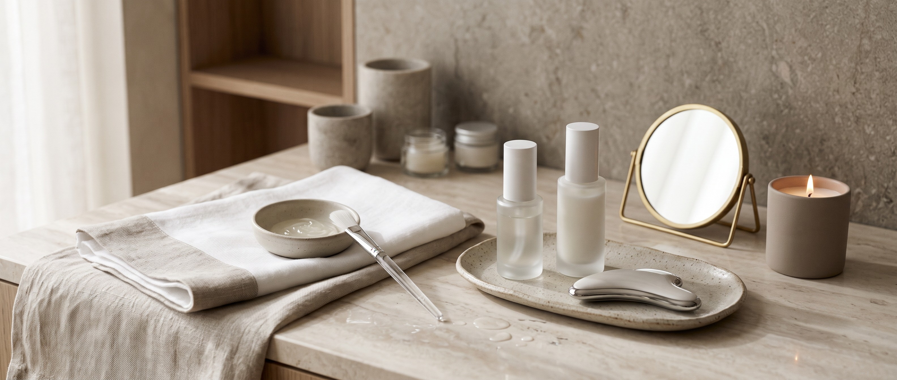
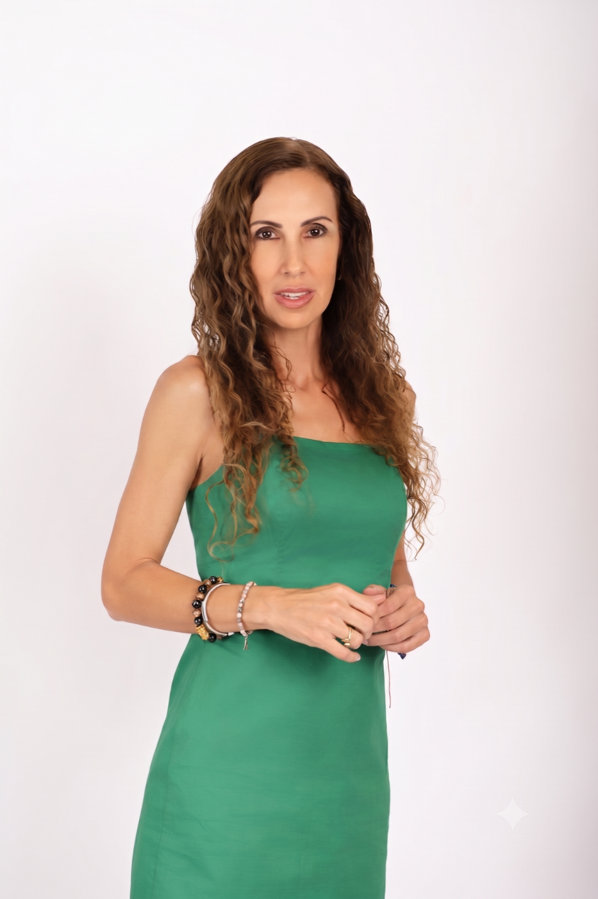
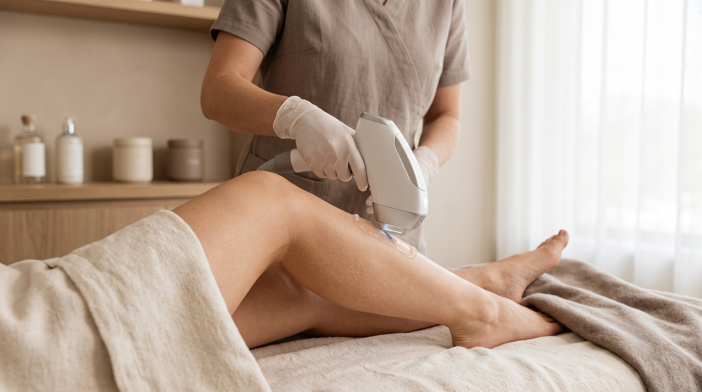
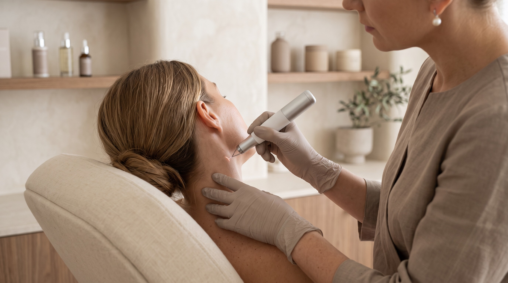
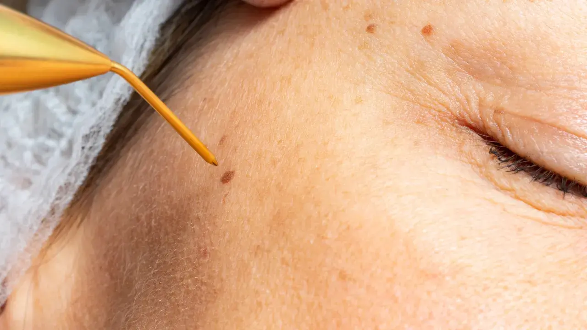

Clínica de medicina estética & regenerativa · Cabo San Lucas
No se trata de cambiar quién eres, sino de volver a sentirte bien contigo.
Medicina estética y regenerativa en Cabo San Lucas, con valoración médica y tratamientos pensados para ti.

Tratamientos destacados
No tienes que saber qué tratamiento necesitas. Cuéntanos qué te gustaría mejorar y te orientamos.



Testimonios
* Contenido de muestra: los testimonios finales serán definidos por la cliente.
"No se trata de cambiar quién eres...
se trata de volver a sentirte tú."
Queremos que venir a D'ALMA se sienta distinto. Un espacio donde te sientas cómodo, seguro y bien contigo mismo.
¿Por qué D'ALMA?
Primero te escuchamos. Después vemos qué necesitas.
Antes de recomendarte cualquier tratamiento, queremos saber qué te preocupa y qué estás buscando.
Buscamos armonía y cambios que se sientan bien contigo, sin perder lo que te hace tú.
Creamos un espacio para sentirse cómodo, seguro y acompañado desde que llegas.
Preguntas frecuentes

tu historia."
Nosotros
Más que una clínica, un espacio donde puedas sentirte en confianza y bien contigo.

Hola, soy Ana María.
D'ALMA nació de querer crear el tipo de clínica al que yo misma quisiera llegar: un lugar donde te escuchen, te expliquen y te orienten sin hacerte sentir que tienes que cambiarlo todo. Queremos que cada persona se sienta cómoda, segura y acompañada desde el primer momento.
Soy comunicóloga y periodista de formación, y desde hace años he estado vinculada al desarrollo y operación de clínicas estéticas.
Cuando una persona comienza a cuidarse, muchas veces no cambia solamente por fuera. También cambia la forma en que se mira, la seguridad con la que se siente y la manera en que se relaciona consigo misma.
Nuestro equipo
Nuestra forma de trabajar
Nunca aplicamos un tratamiento sin entender primero qué necesitas, qué resultado buscas y cuál es la mejor opción para ti.
Te explicamos cada paso con claridad, sin presión y sin promesas exageradas.
D'ALMA es un espacio para mujeres y hombres, donde queremos que cada persona se sienta cómoda, escuchada y bienvenida.
Tu piel también cuenta tu historia.
Agenda una valoración y cuéntanos qué necesitas.

Servicios
Cada tratamiento está pensado para ayudarte a sentirte bien contigo, de forma natural, cercana y personalizada.
¿Qué te gustaría mejorar?
Cuéntanos qué te preocupa y te ayudamos a encontrar la mejor opción para ti.
"Suavizar sin dejar de ser tú."
"Equilibrar, no transformar."

"Una piel limpia, hidratada y luminosa también se siente diferente."
"Ayudar a tu piel a renovarse desde adentro."
"Cuando tu piel necesita algo más que hidratación."

"Cuidar tu cabello también es cuidar cómo te sientes."

"Menos pendiente del vello. Más libertad para sentirte bien en tu piel."

"Hay pequeños detalles en la piel que también merecen atención."

"Cuando un pequeño detalle puede hacer una gran diferencia."
"Un programa pensado para ayudarte a bajar de peso con acompañamiento médico y seguimiento durante todo el proceso."
Preguntas frecuentes
Agenda una valoración.
Te explicamos qué tratamiento es más adecuado para ti según tu piel, tus objetivos y tu presupuesto.
Testimonios
"Lo más bonito no es solo verse diferente... es volver a sentirse bien con uno mismo."
Antes y después
Resultados reales, misma luz y ángulo. Naturalidad ante todo.
* Los resultados varían según cada persona. Fotos publicadas con autorización firmada.
Contacto
La forma más rápida de agendar es por WhatsApp. También puedes escribirnos y te respondemos pronto.
¿Tienes alguna duda? Escríbenos. Estamos para orientarte.
Encuéntranos
Brisas del Pacífico, Cabo San Lucas, BCS